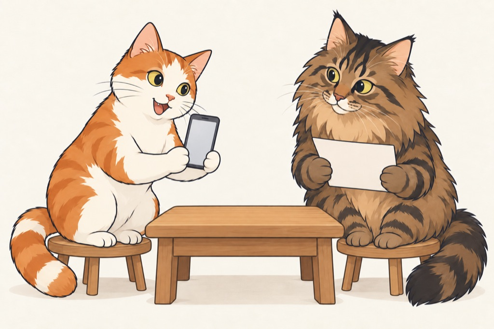
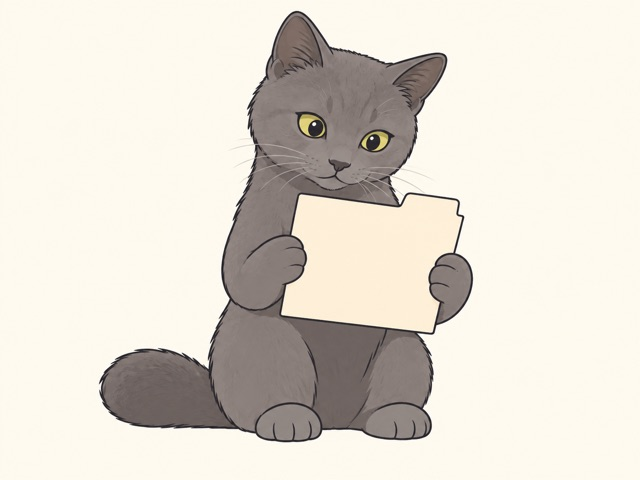

640 级别的小图，是否已经够用？
同一张插画、同样的显示占位，只比较导出尺寸；没有重新生成两张场景


正式页若给插画约 500–640 像素宽，小图适合这一占位；更大占位会放大像素，角色花色与爪子边缘需人工比较
一次原生分辨率 Probe
| Prompt 中明确请求 | 640×480 · 快速卡通草稿 |
|---|---|
| 工具实际返回 | 1448×1086 PNG |
| 本次调用耗时 | 约 16.8 秒 |
| 下方保存版本 | 640×480 JPEG · 生成后缩小 |
| Token 与模型 | 工具没有返回，不估算成本 |

一次短 Prompt、一个角色和一张参考的结果，不能证明小分辨率使生成更快；本轮仅测到比例遵循、像素尺寸未遵循
官方 API 开放 size、quality 与 JPEG 输出；当前内置工具只开放 Prompt、参考图与透明背景。官方当前自定义尺寸指南的最少像素数为 655,360，640×480 的 307,200 像素低于该范围。API 参数与这里的 Prompt 请求须分别判断